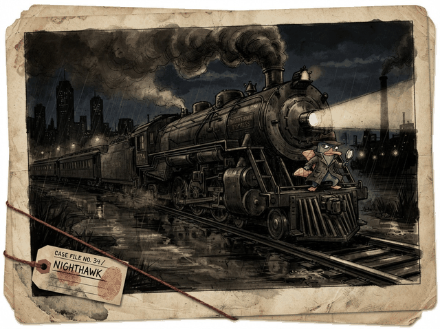

АРХИВНОЕ ДОСЬЕ № 08-11: Главный конверт исчез, а ниточки ведут от администратора Кучерявого на первом этаже к старым плёнкам и восьмилетней давности. Впереди допросы, спецпроверки и кодовая фраза из четырёх частей. Нажимай кнопку ниже, чтобы вскрыть дело.
> Подготовка угольного стола архива...
> Разложены 6 улик и 4 спецпроверки...
> Заряжена кассета «Электроника-302»...
> Доступ разрешён: ДЕТЕКТИВ МАРИЯ
ВНЕЗАПНЫЙ ЭПИЗОД • РЕЛЬСЫ У ПЕРЕХОДА
ЭКСПРЕСС ДОГОНЯЕТ ПЭРРИ УТКОНОСА

Локомотив накатывает сзади за агентом
ОУ, ЧЁРТ ВОЗЬМИ, ОТКУДА ЗДЕСЬ ЭТОТ ПОЕЗД?!
Состав резко пошёл в погоню за Пэрри Утконосом, пока сигнал poezd.mp3 гремел на весь участок между 4-м и 5-м этапами.
ДЕЛО № 08-11
СЕКРЕТНО
КОДОВАЯ ФРАЗА СЕЙФА:
????
????
????
????
Лист 1988-М • Не сгибать
Кучерявый — 1 этаж, допрос
Улика № 5 • проверить частоту
УЛИКА №1
Название этапа
Пометка на полях
ЭЛЕКТРОНИКА-302 • stage1.mp300:00 / 00:00
⚙
⚙
ОПЕРАТИВНАЯ СПРАВКА
Дослушай запись этапа до конца, чтобы открылись варианты ответа.
СПЕЦПРОВЕРКА
Название мини-игры
ИНСТРУКЦИЯ ПЕРЕД ЗАПУСКОМ
БОНУСНЫЙ АРХИВ • ДЕЛО ЗАКРЫТО
НЕУДАЧНЫЕ ДУБЛИ (N1–N6)
Брак при записи кассет и запасные реплики. Выбирай любой дубль и запускай воспроизведение с приглушением фона.